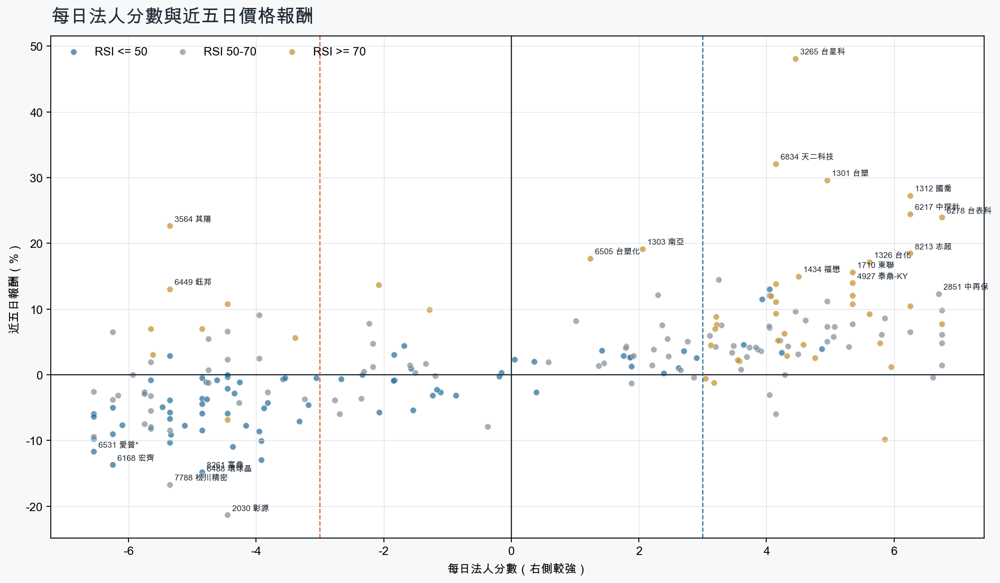
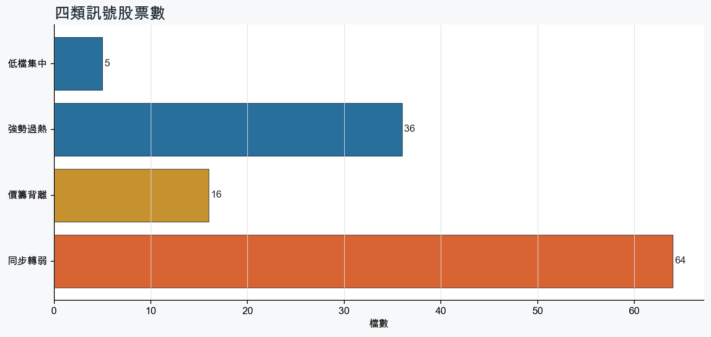
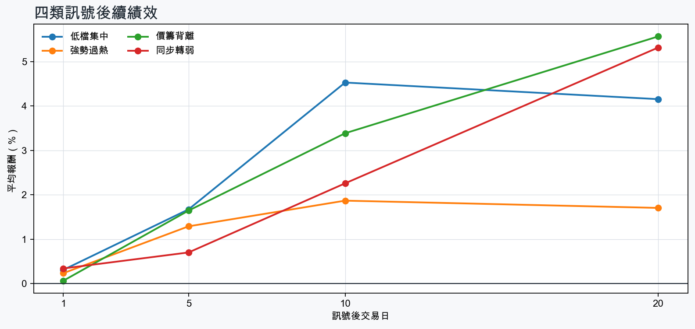

市場情緒中性分歧
近5日法人合計-4,356,464 張
篩選池上漲比例59.1%
籌碼好 / RSI低5 檔
籌碼差 / 價跌15 檔



EPS × PE VALUATION
法人常用的相對估值
顯示保守、基準與樂觀估值帶，不把單一數字包裝成精準目標價。
最新累計 EPS 依季數年化 × 同產業有效 P/E 的 Q25／中位數／Q75。排除本公司、非正 P/E，並以 1.5×IQR 排除離群值。估值帶是公開資料篩選值，不是法人目標價；未使用分析師預估 EPS。
MOOD × MONEY
情緒與籌碼雷達
熱度代表被討論程度；情緒分與法人方向分開計算。熱門不等於適合追價，樣本不足也不硬判多空。
| 股票 | 情緒 | 討論熱度 | 情緒 × 籌碼 | 情緒 × 基本面 |
|---|---|---|---|---|
| 2308 台達電同步轉弱 | 情緒高漲 +49.5信心 100 | 1002 篇 / 135 留言 / 3 則新聞 | 熱門但法人撤退法人分 -3.9 | 基本面與情緒共振基本面分 +3.6 |
| 0056 元大高股息價籌背離 | 情緒高漲 +87.4信心 87 | 981 篇 / 125 留言 / 3 則新聞 | 熱門但法人撤退法人分 -5.6 | 基本面與情緒分歧基本面分 +0.0 |
| 2027 大成鋼強勢過熱 | 情緒高漲 +38.4信心 66 | 861 篇 / 63 留言 / 2 則新聞 | 情籌共振法人分 +5.8 | 基本面與情緒共振基本面分 +3.6 |
| 3006 晶豪科同步轉弱 | 情緒低迷 -35.2信心 72 | 781 篇 / 36 留言 / 3 則新聞 | 情籌雙弱法人分 -6.5 | 基本面佳、情緒悲觀基本面分 +3.6 |
| 3265 台星科強勢過熱 | 情緒高漲 +68.0信心 68 | 721 篇 / 23 留言 / 3 則新聞 | 情籌共振法人分 +4.5 | 基本面與情緒共振基本面分 +3.6 |
| 2454 聯發科同步轉弱 | 偏空 -23.2信心 57 | 661 篇 / 12 留言 / 3 則新聞 | 情籌雙弱法人分 -5.3 | 基本面佳、情緒悲觀基本面分 +2.4 |
| 6834 天二科技強勢過熱 | 情緒高漲 +47.2信心 60 | 651 篇 / 11 留言 / 3 則新聞 | 情籌共振法人分 +4.2 | 基本面與情緒共振基本面分 +3.6 |
| 6531 愛普*同步轉弱 | 偏多 +29.7信心 30 | 460 篇 / 0 留言 / 3 則新聞 | 熱門但法人撤退法人分 -6.5 | 基本面與情緒共振基本面分 +3.6 |
| 6488 環球晶同步轉弱 | 偏空 -29.7信心 30 | 460 篇 / 0 留言 / 3 則新聞 | 情籌雙弱法人分 -4.8 | 基本面與情緒分歧基本面分 -0.1 |
| 6547 高端疫苗同步轉弱 | 中性分歧 +9.9信心 30 | 460 篇 / 0 留言 / 3 則新聞 | 情籌混合法人分 -4.4 | 基本面與情緒分歧基本面分 -0.2 |
| 2305 全友價籌背離 | 偏空 -29.7信心 30 | 460 篇 / 0 留言 / 3 則新聞 | 情籌雙弱法人分 -4.0 | 基本面佳、情緒悲觀基本面分 +3.6 |
| 2478 大毅價籌背離 | 中性分歧 +0.0信心 30 | 460 篇 / 0 留言 / 3 則新聞 | 情籌混合法人分 -4.8 | 基本面與情緒分歧基本面分 +3.6 |
01
籌碼好 / RSI低
優先研究基本面；法人續買且價格止穩時，才適合分批觀察。
| 股票 / 確認狀態 | 每日法人分 | 浦男式近似 | 法人加速度 | RSI / 相對強弱 | 量價確認 | 融資融券 | 每週集保確認 | 基本面 | EPS × 同業 P/E 估值 | 情緒 / 情籌 | 近期消息 | 論壇討論 |
|---|---|---|---|---|---|---|---|---|---|---|---|---|
| 2353 宏碁可研究 · 95 分籌碼與價格確認，可列研究清單 | +4.2法人 +18,185 張 / 4 天 | 接近 · 89站上月線；中期均線偏多；法人籌碼偏多；留意相對強度普通 | +15,306 張近3日 +15,873 / 連續 +2 日 | 49.4相對大盤 -2.1% | 量比 1.74確認分 +4.0價格、量能與籌碼未見明顯弱項 | -%融資 - 張 / 融券 - 張 | +0.16 pp1000張 -0.08 pp | 單月營收年增 +17.6%；累計營收年增 +24.0%；2026 Q2 累計 EPS 0.962026 Q2 累計營益率 1.6%來源：公開資訊觀測站 | 基準 NT$ 34.20估值帶 24.52–49.44現價 32.10 · 估值帶內 · 距基準 +6.5%2026 Q2 累計 EPS 0.96 → 年化 1.92電腦及週邊同業 P/E 12.77／17.81／25.75 · n=80 · 信心中等以 Q2 累計 EPS 年化，不等同分析師全年預估來源：TWSE／TPEx 每日本益比 | 中性分歧 +0.0熱度 46 / 信心 30情籌混合 | 全球PC暴跌22%它卻搶下市占！宏碁Q2獲利翻倍、法人狂掃1.49萬張理財周刊 · 10/142353 宏碁 - 台外交部长林佳龙访波兰应邀华沙安全论坛发表演说(图) - 股市爆料同學會CMoney · 10/14 | 近期沒有明確提及本股的論壇樣本 |
| 1808 潤隆等待確認 · 89 分籌碼有訊號，但價格尚未確認 | +3.9法人 +4,430 張 / 5 天 | 接近 · 66站上月線；法人籌碼偏多；法人買盤加速；留意中期均線未翻多、明顯弱於大盤 | +1,989 張近3日 +3,205 / 連續 +5 日 | 45.0相對大盤 -3.8% | 量比 0.88確認分 +2.820日線低於60日線；近20日弱於大盤 | -%融資 - 張 / 融券 - 張 | -0.11 pp1000張 -0.35 pp | 單月營收年增 +63462.8%；累計營收年增 +14769.5%；2026 Q2 累計 EPS 2.52仍需觀察下一期財報延續性來源：公開資訊觀測站 | 基準 NT$ 49.24估值帶 34.27–65.22現價 34.95 · 估值帶內 · 距基準 +40.9%2026 Q2 累計 EPS 2.52 → 年化 5.04建材營造同業 P/E 6.80／9.77／12.94 · n=62 · 信心中等以 Q2 累計 EPS 年化，不等同分析師全年預估來源：TWSE／TPEx 每日本益比 | 中性分歧 +0.0熱度 38 / 信心 20情籌混合 | 【13:18 即時新聞】潤隆(1808)盤中續漲，主力與法人買盤成市場焦點CMoney投資網誌 · 10/13【12:12 即時新聞】潤隆(1808)股價走強，營建族群政策題材持續發酵CMoney投資網誌 · 10/12 | 近期沒有明確提及本股的論壇樣本 |
| 3264 欣銓可研究 · 99 分籌碼與價格確認，可列研究清單 | +4.0法人 +8,611 張 / 2 天 | 命中 · 95站上月線；中期均線偏多；法人籌碼偏多；留意買超延續不足 | +12,397 張近3日 +9,950 / 連續 +1 日 | 46.8相對大盤 +15.3% | 量比 1.82確認分 +6.5價格、量能與籌碼未見明顯弱項 | -0.3%融資 -33 張 / 融券 -9 張 | -7.40 pp1000張 -8.08 pp | 單月營收年增 +46.9%；累計營收年增 +35.4%；2026 Q2 累計 EPS 4.39仍需觀察下一期財報延續性來源：公開資訊觀測站 | 基準 NT$ 237.5估值帶 156.2–434.7現價 278.0 · 估值帶內 · 距基準 -14.6%2026 Q2 累計 EPS 4.39 → 年化 8.78半導體同業 P/E 17.79／27.05／49.51 · n=149 · 信心中等以 Q2 累計 EPS 年化，不等同分析師全年預估來源：TWSE／TPEx 每日本益比 | 偏多 +29.7熱度 46 / 信心 30情籌共振 | 欣銓Q3獲利估創高Q4續向上- 新聞MoneyDJ · 10/143264 欣銓- 欣銓Q3獲利估創高Q4續向上- 股市爆料同學會CMoney · 10/13 | 近期沒有明確提及本股的論壇樣本 |
| 5880 合庫金可研究 · 83 分籌碼與價格確認，可列研究清單 | +3.6法人 +35,837 張 / 5 天 | 接近 · 77站上月線；中期均線偏多；法人籌碼偏多；留意明顯弱於大盤、基本面中性 | +25,111 張近3日 +29,893 / 連續 +5 日 | 49.2相對大盤 -5.5% | 量比 0.92確認分 +3.1近20日弱於大盤 | -%融資 - 張 / 融券 - 張 | +0.20 pp1000張 +0.19 pp | 2026 Q2 累計 EPS 0.80仍需觀察下一期財報延續性來源：公開資訊觀測站 | 基準 NT$ 20.86估值帶 11.49–25.33現價 27.15 · 高於估值帶 · 距基準 -23.1%2026 Q2 累計 EPS 0.80 → 年化 1.60金融保險同業 P/E 7.18／13.04／15.83 · n=39 · 信心中等以 Q2 累計 EPS 年化，不等同分析師全年預估來源：TWSE／TPEx 每日本益比 | 偏多 +29.7熱度 46 / 信心 30情籌共振 | 合庫金前三季獲利202.49億元、創同期新高 每股賺1.22元工商時報 · 10/14合庫金獲利／前九月突破200億元續創新高、年增26.8% 銀保證同創新高UDN · 10/14 | 近期沒有明確提及本股的論壇樣本 |
| 2542 興富發等待確認 · 61 分籌碼有訊號，但價格尚未確認 | +4.9法人 +15,725 張 / 5 天 | 未命中 · 45法人籌碼偏多；法人買盤加速；買超具延續性；留意未站月線、中期均線未翻多 | +2,590 張近3日 +9,422 / 連續 +6 日 | 21.5相對大盤 -19.9% | 量比 0.39確認分 -2.9收盤跌破20日線；20日線低於60日線；近20日弱於大盤；成交量不足 | -%融資 - 張 / 融券 - 張 | -1.62 pp1000張 -1.78 pp | 單月營收年增 +103.7%；累計營收年增 +228.4%；2026 Q2 累計 EPS 2.45仍需觀察下一期財報延續性來源：公開資訊觀測站 | 基準 NT$ 47.87估值帶 33.32–63.41現價 39.70 · 估值帶內 · 距基準 +20.6%2026 Q2 累計 EPS 2.45 → 年化 4.90建材營造同業 P/E 6.80／9.77／12.94 · n=62 · 信心中等以 Q2 累計 EPS 年化，不等同分析師全年預估來源：TWSE／TPEx 每日本益比 | 偏空 -29.7熱度 46 / 信心 30法人布局、市場悲觀 | 興富發今除息4元！開盤後跌近6%陷貼息窘境 分析師：上漲原因消失了Yahoo股市 · 09/22《投信賣超4-2》南亞科(718)、興富發(705)、致伸(671)富聯網 · 10/14 | 近期沒有明確提及本股的論壇樣本 |
02
籌碼好 / RSI高
趨勢強但不追價，等待量縮、RSI降溫或回測支撐。
| 股票 / 確認狀態 | 每日法人分 | 浦男式近似 | 法人加速度 | RSI / 相對強弱 | 量價確認 | 融資融券 | 每週集保確認 | 基本面 | EPS × 同業 P/E 估值 | 情緒 / 情籌 | 近期消息 | 論壇討論 |
|---|---|---|---|---|---|---|---|---|---|---|---|---|
| 6278 台表科等待拉回 · 100 分等拉回，不追價 | +6.8法人 +22,031 張 / 5 天 | 接近 · 90站上月線；中期均線偏多；法人籌碼偏多；留意RSI過熱 | +2,971 張近3日 +13,525 / 連續 +10 日 | 86.9相對大盤 +50.2% | 量比 1.11確認分 +6.5價格、量能與籌碼未見明顯弱項 | -%融資 - 張 / 融券 - 張 | +6.42 pp1000張 +4.90 pp | 單月營收年增 +15.9%；累計營收年增 +6.5%；2026 Q2 累計 EPS 4.932026 Q2 累計營益率 6.0%來源：公開資訊觀測站 | 基準 NT$ 241.0估值帶 124.6–369.8現價 290.0 · 估值帶內 · 距基準 -16.9%2026 Q2 累計 EPS 4.93 → 年化 9.86光電同業 P/E 12.64／24.44／37.50 · n=68 · 信心中等以 Q2 累計 EPS 年化，不等同分析師全年預估來源：TWSE／TPEx 每日本益比 | 中性分歧 +0.0熱度 46 / 信心 30情籌混合 | 台表科(6278)切入光通訊：利用小碎步型態，獲得 5 天 24% 漲幅！-Sara WangCMoney投資網誌 · 10/14【10:17 即時新聞】台表科(6278)股價亮燈漲停，主力與法人買盤成盤中焦點CMoney投資網誌 · 10/14 | 近期沒有明確提及本股的論壇樣本 |
| 3016 嘉晶等待拉回 · 97 分等拉回，不追價 | +5.8法人 +3,868 張 / 4 天 | 接近 · 79站上月線；中期均線偏多；法人籌碼偏多；留意法人買盤未加速、量能異常 | -469 張近3日 +2,388 / 連續 -1 日 | 71.9相對大盤 +49.5% | 量比 0.63確認分 +1.2成交量不足；法人買盤減速 | -%融資 - 張 / 融券 - 張 | +6.97 pp1000張 +7.79 pp | 單月營收年增 +52.7%；累計營收年增 +36.9%；2026 Q2 累計 EPS 1.00仍需觀察下一期財報延續性來源：公開資訊觀測站 | 基準 NT$ 53.60估值帶 35.30–95.24現價 169.5 · 高於估值帶 · 距基準 -68.4%2026 Q2 累計 EPS 1.00 → 年化 2.00半導體同業 P/E 17.65／26.80／47.62 · n=147 · 信心中等以 Q2 累計 EPS 年化，不等同分析師全年預估來源：TWSE／TPEx 每日本益比 | 樣本不足 +0.0熱度 0 / 信心 0情緒樣本不足 | 近期沒有通過股票語境篩選的新聞 | 近期沒有明確提及本股的論壇樣本 |
| 1409 新纖等待拉回 · 100 分等拉回，不追價 | +6.8法人 +26,894 張 / 5 天 | 命中 · 91站上月線；中期均線偏多；法人籌碼偏多；留意量能尚未確認、動能位置非最佳 | +6,014 張近3日 +17,964 / 連續 +8 日 | 76.1相對大盤 +6.4% | 量比 2.90確認分 +5.3價格、量能與籌碼未見明顯弱項 | -%融資 - 張 / 融券 - 張 | +0.63 pp1000張 +0.45 pp | 單月營收年增 +11.7%；累計營收年增 +12.0%；2026 Q2 累計 EPS 1.18仍需觀察下一期財報延續性來源：公開資訊觀測站 | 基準 NT$ 31.95估值帶 24.21–45.60現價 27.30 · 估值帶內 · 距基準 +17.1%2026 Q2 累計 EPS 1.18 → 年化 2.36紡織纖維同業 P/E 10.26／13.54／19.32 · n=34 · 信心中等以 Q2 累計 EPS 年化，不等同分析師全年預估來源：TWSE／TPEx 每日本益比 | 中性分歧 +0.0熱度 46 / 信心 30情籌混合 | 擺脫傳產宿命 新纖切入無人機、導體材料，營收明年發酵理財周刊 · 10/141409 新纖 - 過山洞….‼️🤩 - 股市爆料同學會CMoney · 10/14 | 近期沒有明確提及本股的論壇樣本 |
| 2484 希華等待拉回 · 95 分等拉回，不追價 | +4.2法人 +4,825 張 / 3 天 | 命中 · 89站上月線；中期均線偏多；法人籌碼偏多；留意法人買盤未加速、動能位置非最佳 | -3,623 張近3日 -79 / 連續 +1 日 | 73.8相對大盤 +31.9% | 量比 1.60確認分 +2.5法人買盤減速 | -%融資 - 張 / 融券 - 張 | +8.72 pp1000張 +7.17 pp | 單月營收年增 +23.1%；累計營收年增 +4.0%；2026 Q2 累計 EPS 0.86仍需觀察下一期財報延續性來源：公開資訊觀測站 | 基準 NT$ 48.07估值帶 31.61–80.24現價 91.50 · 高於估值帶 · 距基準 -47.5%2026 Q2 累計 EPS 0.86 → 年化 1.72電子零組件同業 P/E 18.38／27.95／46.65 · n=147 · 信心中等以 Q2 累計 EPS 年化，不等同分析師全年預估來源：TWSE／TPEx 每日本益比 | 樣本不足 +0.0熱度 27 / 信心 10情緒樣本不足 | 【11:41 即時新聞】希華(2484)股價走強，頻率元件與營收題材受關注CMoney投資網誌 · 10/14 | 近期沒有明確提及本股的論壇樣本 |
| 6834 天二科技等待拉回 · 100 分等拉回，不追價 | +4.2法人 +4,269 張 / 3 天 | 接近 · 86站上月線；中期均線偏多；法人籌碼偏多；留意量能異常、動能位置非最佳 | +3,398 張近3日 +3,576 / 連續 -1 日 | 76.3相對大盤 +45.2% | 量比 3.12確認分 +5.3價格、量能與籌碼未見明顯弱項 | -%融資 - 張 / 融券 - 張 | +3.38 pp1000張 -0.01 pp | 單月營收年增 +132.4%；累計營收年增 +61.2%；2026 Q2 累計 EPS 1.60仍需觀察下一期財報延續性來源：公開資訊觀測站 | 基準 NT$ 89.44估值帶 58.82–149.3現價 162.5 · 高於估值帶 · 距基準 -45.0%2026 Q2 累計 EPS 1.60 → 年化 3.20電子零組件同業 P/E 18.38／27.95／46.65 · n=147 · 信心中等以 Q2 累計 EPS 年化，不等同分析師全年預估來源：TWSE／TPEx 每日本益比 | 情緒高漲 +47.2熱度 65 / 信心 60情籌共振 | 6834 天二科技- 天二增資認股，每股80塊，可認1萬多股，大概要80幾萬，要認- 股市爆料同學會CMoney · 10/14天二科技9月/前3季營收續新猷，估全年AI占比達15%MoneyDJ · 10/12 | [情報] 6834 天二科技 9月自結:0.46 年增:4,700%PTT Stock · 10-14 · 11 留言 |
| 2402 毅嘉等待拉回 · 100 分等拉回，不追價 | +5.3法人 +6,526 張 / 4 天 | 接近 · 80站上月線；中期均線偏多；法人籌碼偏多；留意量能異常、RSI過熱 | +2,611 張近3日 +4,838 / 連續 +3 日 | 79.3相對大盤 +16.2% | 量比 6.58確認分 +5.3價格、量能與籌碼未見明顯弱項 | -%融資 - 張 / 融券 - 張 | +1.81 pp1000張 +1.42 pp | 單月營收年增 +15.1%；累計營收年增 +16.9%；2026 Q2 累計 EPS 0.462026 Q2 累計營益率 4.4%來源：公開資訊觀測站 | 基準 NT$ 25.87估值帶 16.92–44.17現價 65.60 · 高於估值帶 · 距基準 -60.6%2026 Q2 累計 EPS 0.46 → 年化 0.92電子零組件同業 P/E 18.39／28.12／48.01 · n=148 · 信心中等以 Q2 累計 EPS 年化，不等同分析師全年預估來源：TWSE／TPEx 每日本益比 | 偏多 +19.8熱度 38 / 信心 20情籌混合 | 【10:27 即時新聞】毅嘉(2402)亮燈漲停，光通訊題材成盤中焦點CMoney投資網誌 · 10/14《外資買超27-13》毅嘉(519)、志超(517)、豐泰(516)富聯網 · 10/14 | 近期沒有明確提及本股的論壇樣本 |
| 8213 志超等待拉回 · 100 分等拉回，不追價 | +6.2法人 +3,792 張 / 5 天 | 接近 · 80站上月線；中期均線偏多；法人籌碼偏多；留意量能異常、RSI過熱 | +1,096 張近3日 +2,566 / 連續 +8 日 | 82.5相對大盤 +20.8% | 量比 4.04確認分 +5.3價格、量能與籌碼未見明顯弱項 | -%融資 - 張 / 融券 - 張 | +0.57 pp1000張 +1.66 pp | 單月營收年增 +50.6%；累計營收年增 +20.8%；2026 Q2 累計 EPS 0.932026 Q2 累計營益率 3.5%來源：公開資訊觀測站 | 基準 NT$ 53.23估值帶 34.21–89.30現價 40.65 · 估值帶內 · 距基準 +30.9%2026 Q2 累計 EPS 0.93 → 年化 1.86電子零組件同業 P/E 18.39／28.62／48.01 · n=148 · 信心中等以 Q2 累計 EPS 年化，不等同分析師全年預估來源：TWSE／TPEx 每日本益比 | 偏多 +29.7熱度 46 / 信心 30情籌共振 | 【11:17 即時新聞】志超(8213)股價走強，量能與主力買盤成盤中焦點CMoney投資網誌 · 10/14《外資買超27-13》毅嘉(519)、志超(517)、豐泰(516)富聯網 · 10/14 | 近期沒有明確提及本股的論壇樣本 |
| 2027 大成鋼等待拉回 · 100 分等拉回，不追價 | +5.8法人 +19,556 張 / 5 天 | 接近 · 85站上月線；中期均線偏多；法人籌碼偏多；留意RSI過熱 | +7,655 張近3日 +13,642 / 連續 +6 日 | 81.9相對大盤 +2.2% | 量比 1.56確認分 +5.1價格、量能與籌碼未見明顯弱項 | -%融資 - 張 / 融券 - 張 | -0.08 pp1000張 -0.18 pp | 單月營收年增 +41.1%；累計營收年增 +35.0%；2026 Q2 累計 EPS 3.10仍需觀察下一期財報延續性來源：公開資訊觀測站 | 基準 NT$ 79.73估值帶 66.46–95.48現價 50.00 · 低於估值帶 · 距基準 +59.5%2026 Q2 累計 EPS 3.10 → 年化 6.20鋼鐵工業同業 P/E 10.72／12.86／15.40 · n=27 · 信心中等以 Q2 累計 EPS 年化，不等同分析師全年預估來源：TWSE／TPEx 每日本益比 | 情緒高漲 +38.4熱度 86 / 信心 66情籌共振 | 今日最夯股／大成鋼量增收紅 三大法人齊買是為什麼？ | 市場焦點 | 證券經濟日報 · 09/24AI封測雙雄大爆發！台星科連兩日漲停、矽格營收創高 2奈米與ASIC點燃2027年成長引擎理財周刊 · 10/08 | [新聞] 2027年AI迎轉折？谷月涵：電力缺口恐成瓶頸PTT Stock · 10-14 · 63 留言 |
| 3265 台星科等待拉回 · 100 分等拉回，不追價 | +4.5法人 +5,812 張 / 3 天 | 接近 · 85站上月線；中期均線偏多；法人籌碼偏多；留意量能尚未確認、RSI過熱 | +5,108 張近3日 +5,971 / 連續 +3 日 | 90.5相對大盤 +72.0% | 量比 0.83確認分 +6.3價格、量能與籌碼未見明顯弱項 | -8.1%融資 -359 張 / 融券 +65 張 | +3.21 pp1000張 +0.65 pp | 單月營收年增 +11.5%；累計營收年增 +15.9%；2026 Q2 累計 EPS 3.85仍需觀察下一期財報延續性來源：公開資訊觀測站 | 基準 NT$ 208.3估值帶 137.0–381.2現價 292.5 · 估值帶內 · 距基準 -28.8%2026 Q2 累計 EPS 3.85 → 年化 7.70半導體同業 P/E 17.79／27.05／49.51 · n=149 · 信心中等以 Q2 累計 EPS 年化，不等同分析師全年預估來源：TWSE／TPEx 每日本益比 | 情緒高漲 +68.0熱度 72 / 信心 68情籌共振 | 台星科9月自結獲利年增1.2倍 EPS 0.74元自由財經 · 10/14台星科獲利／自結9月獲利1.01億元、年增119.6% 每股賺0.74元UDN · 10/14 | [情報] 3265 台星科 9月自結:0.74 年增:117.6%PTT Stock · 10-14 · 23 留言 |
| 1326 台化等待拉回 · 100 分等拉回，不追價 | +5.6法人 +55,156 張 / 4 天 | 接近 · 85站上月線；中期均線偏多；法人籌碼偏多；留意量能尚未確認、RSI過熱 | +263 張近3日 +34,493 / 連續 +2 日 | 81.3相對大盤 +16.5% | 量比 2.94確認分 +3.8價格、量能與籌碼未見明顯弱項 | -%融資 - 張 / 融券 - 張 | +0.48 pp1000張 +0.44 pp | 單月營收年增 +44.8%；累計營收年增 +19.0%；2026 Q2 累計 EPS 2.112026 Q2 累計營益率 3.0%來源：公開資訊觀測站 | 基準 NT$ 67.69估值帶 39.79–129.4現價 85.50 · 估值帶內 · 距基準 -20.8%2026 Q2 累計 EPS 2.11 → 年化 4.22塑膠工業同業 P/E 9.43／16.04／30.66 · n=9 · 信心中等以 Q2 累計 EPS 年化，不等同分析師全年預估來源：TWSE／TPEx 每日本益比 | 中性分歧 +0.0熱度 46 / 信心 30情籌混合 | 〈焦點股〉塑化族群紅光滿面 台塑、台化亮燈漲停 南亞寫新天價鉅亨網 · 10/14南亞、台化漲停有原因！半導體布局發酵：法人最新目標價一次看三立新聞 · 10/14 | 近期沒有明確提及本股的論壇樣本 |
| 4938 和碩等待拉回 · 100 分等拉回，不追價 | +4.2法人 +29,703 張 / 3 天 | 命中 · 96站上月線；中期均線偏多；法人籌碼偏多；留意動能位置非最佳 | +32,838 張近3日 +31,750 / 連續 +3 日 | 70.5相對大盤 +4.6% | 量比 1.80確認分 +5.7價格、量能與籌碼未見明顯弱項 | -%融資 - 張 / 融券 - 張 | -0.25 pp1000張 -0.22 pp | 單月營收年增 +86.9%；累計營收年增 +13.8%；2026 Q2 累計 EPS 2.262026 Q2 累計營益率 1.4%來源：公開資訊觀測站 | 基準 NT$ 82.58估值帶 57.72–116.4現價 100.0 · 估值帶內 · 距基準 -17.4%2026 Q2 累計 EPS 2.26 → 年化 4.52電腦及週邊同業 P/E 12.77／18.27／25.75 · n=80 · 信心中等以 Q2 累計 EPS 年化，不等同分析師全年預估來源：TWSE／TPEx 每日本益比 | 中性分歧 +0.0熱度 46 / 信心 30情籌混合 | 名師操盤》長榮、和碩...3檔潛力股攻略 台股震盪中藏黃金Yahoo股市 · 10/144938 和碩- 博通陳福陽憂AI 缺資金童子賢淡定看：只是「跳水前先蹲一下」 - 股市爆料同學會CMoney · 10/14 | 近期沒有明確提及本股的論壇樣本 |
| 1313 聯成等待拉回 · 100 分等拉回，不追價 | +5.6法人 +11,188 張 / 5 天 | 接近 · 81站上月線；中期均線偏多；法人籌碼偏多；留意量能尚未確認、RSI過熱 | +1,158 張近3日 +6,342 / 連續 +6 日 | 79.5相對大盤 +8.5% | 量比 2.92確認分 +4.8價格、量能與籌碼未見明顯弱項 | -%融資 - 張 / 融券 - 張 | +0.62 pp1000張 +0.81 pp | 單月營收年增 +0.7%；累計營收年增 +6.5%；2026 Q2 累計 EPS 0.312026 Q2 累計營益率 2.0%來源：公開資訊觀測站 | 基準 NT$ 10.37估值帶 6.27–21.60現價 13.60 · 估值帶內 · 距基準 -23.8%2026 Q2 累計 EPS 0.31 → 年化 0.62塑膠工業同業 P/E 10.12／16.72／34.84 · n=10 · 信心較低以 Q2 累計 EPS 年化，不等同分析師全年預估；交易所無有效本益比，無法交叉檢核近四季 EPS來源：TWSE／TPEx 每日本益比 | 樣本不足 +0.0熱度 0 / 信心 0情緒樣本不足 | 近期沒有通過股票語境篩選的新聞 | 近期沒有明確提及本股的論壇樣本 |
| 1714 和桐等待拉回 · 100 分等拉回，不追價 | +3.2法人 +7,614 張 / 3 天 | 接近 · 90站上月線；中期均線偏多；法人籌碼偏多；留意RSI過熱 | +4,639 張近3日 +6,942 / 連續 +2 日 | 85.2相對大盤 +27.9% | 量比 1.45確認分 +6.5價格、量能與籌碼未見明顯弱項 | -%融資 - 張 / 融券 - 張 | +1.40 pp1000張 +1.48 pp | 單月營收年增 +57.4%；累計營收年增 +60.1%；2026 Q2 累計 EPS 0.89仍需觀察下一期財報延續性來源：公開資訊觀測站 | 基準 NT$ 36.88估值帶 25.81–51.78現價 20.45 · 低於估值帶 · 距基準 +80.3%2026 Q2 累計 EPS 0.89 → 年化 1.78化學工業同業 P/E 14.50／20.72／29.09 · n=32 · 信心中等以 Q2 累計 EPS 年化，不等同分析師全年預估來源：TWSE／TPEx 每日本益比 | 樣本不足 +0.0熱度 0 / 信心 0情緒樣本不足 | 近期沒有通過股票語境篩選的新聞 | 近期沒有明確提及本股的論壇樣本 |
| 2377 微星等待拉回 · 99 分等拉回，不追價 | +4.8法人 +5,941 張 / 5 天 | 命中 · 91站上月線；中期均線偏多；法人籌碼偏多 | +3,598 張近3日 +4,679 / 連續 +5 日 | 70.0相對大盤 +1.4% | 量比 1.21確認分 +4.9價格、量能與籌碼未見明顯弱項 | -%融資 - 張 / 融券 - 張 | +1.49 pp1000張 +1.33 pp | 單月營收年增 +1.8%；2026 Q2 累計 EPS 7.59累計營收年增 -5.5%；2026 Q2 累計營益率 6.7%來源：公開資訊觀測站 | 基準 NT$ 277.3估值帶 193.8–390.9現價 159.0 · 低於估值帶 · 距基準 +74.4%2026 Q2 累計 EPS 7.59 → 年化 15.18電腦及週邊同業 P/E 12.77／18.27／25.75 · n=80 · 信心中等以 Q2 累計 EPS 年化，不等同分析師全年預估來源：TWSE／TPEx 每日本益比 | 樣本不足 +0.0熱度 0 / 信心 0情緒樣本不足 | 近期沒有通過股票語境篩選的新聞 | 近期沒有明確提及本股的論壇樣本 |
| 4927 泰鼎-KY等待拉回 · 100 分等拉回，不追價 | +5.3法人 +3,937 張 / 4 天 | 接近 · 75站上月線；中期均線偏多；法人籌碼偏多；留意基本面偏弱、RSI過熱 | +1,224 張近3日 +4,568 / 連續 +4 日 | 88.7相對大盤 +39.0% | 量比 1.79確認分 +6.5價格、量能與籌碼未見明顯弱項 | -%融資 - 張 / 融券 - 張 | +5.83 pp1000張 +6.32 pp | 單月營收年增 +72.8%；累計營收年增 +9.7%2026 Q2 累計 EPS -5.46；2026 Q2 累計營益率 -22.8%來源：公開資訊觀測站 | 不適用年化 EPS 非正數，不適合使用本益比估值 | 樣本不足 +0.0熱度 0 / 信心 0情緒樣本不足 | 近期沒有通過股票語境篩選的新聞 | 近期沒有明確提及本股的論壇樣本 |
03
籌碼差 / 股價上漲
可能是事件行情或軋空；沒有籌碼改善前避免追高。
| 股票 / 確認狀態 | 每日法人分 | 浦男式近似 | 法人加速度 | RSI / 相對強弱 | 量價確認 | 融資融券 | 每週集保確認 | 基本面 | EPS × 同業 P/E 估值 | 情緒 / 情籌 | 近期消息 | 論壇討論 |
|---|---|---|---|---|---|---|---|---|---|---|---|---|
| 3564 其陽風險警示 · 48 分背離警戒，避免追高 | -5.3法人 -1,989 張 / 1 天 | 接近 · 60站上月線；中期均線偏多；明顯強於大盤；留意法人籌碼偏弱、法人買盤未加速 | -634 張近3日 -1,043 / 連續 -1 日 | 86.1相對大盤 +51.6% | 量比 2.95確認分 +2.4法人買盤減速 | -5.2%融資 -81 張 / 融券 +181 張 | -0.82 pp1000張 -0.10 pp | 單月營收年增 +54.2%；累計營收年增 +29.8%；2026 Q2 累計 EPS 0.042026 Q2 累計營益率 0.9%來源：公開資訊觀測站 | 基準 NT$ 1.85估值帶 1.20–3.44現價 74.20 · 高於估值帶 · 距基準 -97.5%2026 Q2 累計 EPS 0.04 → 年化 0.08通信網路同業 P/E 14.98／23.13／43.06 · n=60 · 信心較低以 Q2 累計 EPS 年化，不等同分析師全年預估；年化 EPS 為交易所近四季 EPS 的 0.22 倍，需保守解讀來源：TWSE／TPEx 每日本益比 | 偏多 +19.8熱度 38 / 信心 20情籌混合 | 其陽獲利／自結9月獲利1,000萬元 每股賺0.17元UDN · 10/14熱門股－其陽 營收創高鎖漲停中時新聞網 · 10/14 | 近期沒有明確提及本股的論壇樣本 |
| 6449 鈺邦風險警示 · 65 分背離警戒，避免追高 | -5.3法人 -2,844 張 / 1 天 | 接近 · 72站上月線；中期均線偏多；法人買盤加速；留意法人籌碼偏弱、買超延續不足 | +2,666 張近3日 -725 / 連續 -1 日 | 78.0相對大盤 +18.7% | 量比 2.35確認分 +6.5價格、量能與籌碼未見明顯弱項 | -%融資 - 張 / 融券 - 張 | -3.28 pp1000張 -1.87 pp | 單月營收年增 +25.6%；累計營收年增 +24.0%；2026 Q2 累計 EPS 4.42仍需觀察下一期財報延續性來源：公開資訊觀測站 | 基準 NT$ 248.6估值帶 162.6–424.4現價 269.0 · 估值帶內 · 距基準 -7.6%2026 Q2 累計 EPS 4.42 → 年化 8.84電子零組件同業 P/E 18.39／28.12／48.01 · n=148 · 信心中等以 Q2 累計 EPS 年化，不等同分析師全年預估來源：TWSE／TPEx 每日本益比 | 樣本不足 +0.0熱度 27 / 信心 10情緒樣本不足 | 6449 鈺邦- 日半年、月季線交叉，準備噴出- 股市爆料同學會CMoney · 10/14 | 近期沒有明確提及本股的論壇樣本 |
| 2472 立隆電風險警示 · 44 分背離警戒，避免追高 | -5.7法人 -6,137 張 / 1 天 | 接近 · 61站上月線；明顯強於大盤；量價健康；留意中期均線未翻多、法人籌碼偏弱 | -1,886 張近3日 -3,929 / 連續 +1 日 | 74.2相對大盤 +9.0% | 量比 2.35確認分 +2.520日線低於60日線；法人買盤減速 | -%融資 - 張 / 融券 - 張 | -2.21 pp1000張 -3.29 pp | 單月營收年增 +39.5%；累計營收年增 +26.1%；2026 Q2 累計 EPS 3.98仍需觀察下一期財報延續性來源：公開資訊觀測站 | 基準 NT$ 227.8估值帶 146.4–382.2現價 244.0 · 估值帶內 · 距基準 -6.6%2026 Q2 累計 EPS 3.98 → 年化 7.96電子零組件同業 P/E 18.39／28.62／48.01 · n=148 · 信心中等以 Q2 累計 EPS 年化，不等同分析師全年預估來源：TWSE／TPEx 每日本益比 | 樣本不足 +0.0熱度 27 / 信心 10情緒樣本不足 | 2472 立隆電- 【10/14 產業即時新聞】鋁質電容族群強勢大漲5.10%！被動元件迎春風日電貿亮燈領跑- 股市爆料同學會CMoney · 10/14 | 近期沒有明確提及本股的論壇樣本 |
| 2305 全友風險警示 · 56 分背離警戒，避免追高 | -4.0法人 -3,087 張 / 2 天 | 接近 · 75站上月線；中期均線偏多；明顯強於大盤；留意法人籌碼偏弱、法人買盤未加速 | -9,417 張近3日 -8,125 / 連續 -3 日 | 55.5相對大盤 +49.6% | 量比 1.42確認分 +2.5法人買盤減速 | -%融資 - 張 / 融券 - 張 | -0.03 pp1000張 +0.62 pp | 單月營收年增 +212.8%；累計營收年增 +125.1%；2026 Q2 累計 EPS 0.51仍需觀察下一期財報延續性來源：公開資訊觀測站 | 基準 NT$ 17.22估值帶 12.45–23.17現價 63.60 · 高於估值帶 · 距基準 -72.9%2026 Q2 累計 EPS 0.51 → 年化 1.02電腦及週邊同業 P/E 12.21／16.88／22.72 · n=76 · 信心中等以 Q2 累計 EPS 年化，不等同分析師全年預估來源：TWSE／TPEx 每日本益比 | 偏空 -29.7熱度 46 / 信心 30情籌雙弱 | 2305 全友- 籌碼明細1014 - 股市爆料同學會CMoney · 10/142305 全友- 昨天警示今天解除.表示?認同3率.3生月營收新高- 股市爆料同學會CMoney · 10/14 | 近期沒有明確提及本股的論壇樣本 |
| 2478 大毅風險警示 · 66 分背離警戒，避免追高 | -4.8法人 -2,148 張 / 1 天 | 接近 · 73站上月線；中期均線偏多；法人買盤加速；留意法人籌碼偏弱、買超延續不足 | +2,463 張近3日 +394 / 連續 +1 日 | 70.1相對大盤 +10.8% | 量比 2.58確認分 +5.8價格、量能與籌碼未見明顯弱項 | -%融資 - 張 / 融券 - 張 | -1.39 pp1000張 -0.08 pp | 單月營收年增 +29.8%；累計營收年增 +23.6%；2026 Q2 累計 EPS 2.91仍需觀察下一期財報延續性來源：公開資訊觀測站 | 基準 NT$ 165.6估值帶 107.0–279.4現價 137.5 · 估值帶內 · 距基準 +20.4%2026 Q2 累計 EPS 2.91 → 年化 5.82電子零組件同業 P/E 18.39／28.45／48.01 · n=148 · 信心中等以 Q2 累計 EPS 年化，不等同分析師全年預估來源：TWSE／TPEx 每日本益比 | 中性分歧 +0.0熱度 46 / 信心 30情籌混合 | 【09:41 即時新聞】大毅(2478)亮燈漲停，被動元件族群買盤集中CMoney投資網誌 · 10/14被動元件漲勢洶洶！「這檔」連3日跌逾8%今大逆轉強彈7.78% 凱美、大毅、日貿電飆漲停FTNN 新聞網 · 10/14 | 近期沒有明確提及本股的論壇樣本 |
| 6261 久元風險警示 · 40 分背離警戒，避免追高 | -6.2法人 -2,375 張 / 0 天 | 接近 · 60站上月線；明顯強於大盤；基本面有支撐；留意中期均線未翻多、法人籌碼偏弱 | -2,174 張近3日 -2,256 / 連續 -5 日 | 64.3相對大盤 +5.9% | 量比 2.66確認分 +1.220日線低於60日線；法人買盤減速 | +4.2%融資 +161 張 / 融券 +6 張 | +0.82 pp1000張 -0.01 pp | 單月營收年增 +40.7%；累計營收年增 +9.2%；2026 Q2 累計 EPS 2.21仍需觀察下一期財報延續性來源：公開資訊觀測站 | 基準 NT$ 120.3估值帶 78.85–218.8現價 83.40 · 估值帶內 · 距基準 +44.3%2026 Q2 累計 EPS 2.21 → 年化 4.42半導體同業 P/E 17.84／27.22／49.51 · n=149 · 信心中等以 Q2 累計 EPS 年化，不等同分析師全年預估來源：TWSE／TPEx 每日本益比 | 中性分歧 +0.0熱度 38 / 信心 20情籌混合 | 盤中速報 - 久元(6261)股價拉至漲停，漲停價84.0元，成交2,460張TradingView · 10/12封測迎漲價潮！台星科、久元、旺矽股價飆- 證券工商時報 · 10/12 | 近期沒有明確提及本股的論壇樣本 |
| 1815 富喬風險警示 · 42 分背離警戒，避免追高 | -4.8法人 -10,451 張 / 2 天 | 接近 · 64站上月線；中期均線偏多；量價健康；留意法人籌碼偏弱、法人買盤未加速 | -17,644 張近3日 -14,747 / 連續 -1 日 | 67.1相對大盤 -0.2% | 量比 2.28確認分 +1.1法人買盤減速 | -8.5%融資 -4,214 張 / 融券 -40 張 | -2.14 pp1000張 -1.62 pp | 單月營收年增 +82.1%；累計營收年增 +54.9%；2026 Q2 累計 EPS 2.24仍需觀察下一期財報延續性來源：公開資訊觀測站 | 基準 NT$ 126.0估值帶 82.39–215.1現價 134.0 · 估值帶內 · 距基準 -6.0%2026 Q2 累計 EPS 2.24 → 年化 4.48電子零組件同業 P/E 18.39／28.12／48.01 · n=148 · 信心中等以 Q2 累計 EPS 年化，不等同分析師全年預估來源：TWSE／TPEx 每日本益比 | 偏多 +29.7熱度 46 / 信心 30熱門但法人撤退 | 富喬9月營收再創高 AI玻纖布大成長理財周刊 · 10/14PCB材料喊漲15%！南亞一度漲停，富喬、聯茂也突破，還有誰CMoney · 10/14 | 近期沒有明確提及本股的論壇樣本 |
| 2340 台亞風險警示 · 51 分背離警戒，避免追高 | -4.5法人 -10,226 張 / 2 天 | 未命中 · 50站上月線；中期均線偏多；明顯強於大盤；留意法人籌碼偏弱、法人買盤未加速 | -19,790 張近3日 -15,727 / 連續 -3 日 | 79.5相對大盤 +60.3% | 量比 1.90確認分 +2.5法人買盤減速 | -%融資 - 張 / 融券 - 張 | +7.03 pp1000張 +6.28 pp | 單月營收年增 +34.3%；累計營收年增 +8.2%2026 Q2 累計 EPS -0.93；2026 Q2 累計營益率 -22.1%來源：公開資訊觀測站 | 不適用年化 EPS 非正數，不適合使用本益比估值 | 中性分歧 +0.0熱度 46 / 信心 30情籌混合 | 2340 台亞- 誰掌握InP料源，誰就是王者- 股市爆料同學會CMoney · 10/142340 台亞- 血糖感測拚2027下半年能明顯貢獻營收- 股市爆料同學會CMoney · 10/14 | 近期沒有明確提及本股的論壇樣本 |
| 3048 益登風險警示 · 51 分背離警戒，避免追高 | -4.5法人 -4,327 張 / 2 天 | 接近 · 65站上月線；明顯強於大盤；量價健康；留意中期均線未翻多、法人籌碼偏弱 | -979 張近3日 -2,647 / 連續 +1 日 | 69.7相對大盤 +7.9% | 量比 1.86確認分 +2.520日線低於60日線；法人買盤減速 | -%融資 - 張 / 融券 - 張 | -1.27 pp1000張 -0.66 pp | 單月營收年增 +41.9%；累計營收年增 +37.0%；2026 Q2 累計 EPS 3.152026 Q2 累計營益率 2.3%來源：公開資訊觀測站 | 基準 NT$ 78.50估值帶 63.38–144.9現價 56.80 · 低於估值帶 · 距基準 +38.2%2026 Q2 累計 EPS 3.15 → 年化 6.30電子通路同業 P/E 10.06／12.46／23.00 · n=31 · 信心中等以 Q2 累計 EPS 年化，不等同分析師全年預估來源：TWSE／TPEx 每日本益比 | 樣本不足 +0.0熱度 27 / 信心 10情緒樣本不足 | 益登業績創新高 帶動股價強漲UDN · 10/08 | 近期沒有明確提及本股的論壇樣本 |
| 4939 亞電風險警示 · 38 分背離警戒，避免追高 | -5.3法人 -1,590 張 / 1 天 | 未命中 · 57站上月線；中期均線偏多；法人買盤加速；留意法人籌碼偏弱、買超延續不足 | +1,228 張近3日 -101 / 連續 -1 日 | 49.6相對大盤 -10.0% | 量比 0.60確認分 +1.8近20日弱於大盤；成交量不足 | -5.3%融資 -348 張 / 融券 -53 張 | -4.97 pp1000張 -2.90 pp | 單月營收年增 +15.9%；累計營收年增 +17.1%；2026 Q2 累計 EPS 0.532026 Q2 累計營益率 7.0%來源：公開資訊觀測站 | 基準 NT$ 29.63估值帶 19.48–49.45現價 78.50 · 高於估值帶 · 距基準 -62.3%2026 Q2 累計 EPS 0.53 → 年化 1.06電子零組件同業 P/E 18.38／27.95／46.65 · n=147 · 信心中等以 Q2 累計 EPS 年化，不等同分析師全年預估來源：TWSE／TPEx 每日本益比 | 中性分歧 +0.0熱度 46 / 信心 30情籌混合 | 【09:17 即時新聞】亞電(4939)亮燈漲停，高階CCL與軟板族群再成焦點CMoney投資網誌 · 10/144939 亞電 - 果然是城中哥一次郎報到⋯⋯ - 股市爆料同學會CMoney · 10/14 | 近期沒有明確提及本股的論壇樣本 |
| 0056 元大高股息風險警示 · 39 分背離警戒，避免追高 | -5.6法人 -109,468 張 / 0 天 | 未命中 · 52站上月線；中期均線偏多；相對大盤偏強；留意法人籌碼偏弱、法人買盤未加速 | -4,346 張近3日 -65,932 / 連續 -10 日 | 80.2相對大盤 +1.7% | 量比 1.04確認分 +2.5法人買盤減速 | -%融資 - 張 / 融券 - 張 | -0.15 pp1000張 -0.16 pp | 尚無明確成長訊號仍需觀察下一期財報延續性來源：公開資訊觀測站 | 不適用最新財報缺少可年化 EPS | 情緒高漲 +87.4熱度 98 / 信心 87熱門但法人撤退 | 0056漲比大盤兇！除息前強勢直逼60元創新高 今年含息報酬突破7成：押對「2雙雄」神助攻CMoney · 10/140056 元大高股息- 【有籌必報、大盤技籌透視】 - 股市爆料同學會CMoney · 10/14 | [新聞] 0056刷天價、168萬股民嗨翻 持有2檔 夯股PTT Stock · 10-14 · 125 留言 |
| 3406 玉晶光風險警示 · 32 分背離警戒，避免追高 | -5.7法人 -1,982 張 / 1 天 | 接近 · 60站上月線；中期均線偏多；量價健康；留意法人籌碼偏弱、法人買盤未加速 | -1,167 張近3日 -1,553 / 連續 -1 日 | 60.4相對大盤 -4.8% | 量比 1.70確認分 -0.7近20日弱於大盤；法人買盤減速 | -%融資 - 張 / 融券 - 張 | +1.61 pp1000張 -0.93 pp | 單月營收年增 +0.5%；累計營收年增 +10.1%；2026 Q2 累計 EPS 13.99仍需觀察下一期財報延續性來源：公開資訊觀測站 | 基準 NT$ 683.8估值帶 353.7–1,049現價 1,065 · 高於估值帶 · 距基準 -35.8%2026 Q2 累計 EPS 13.99 → 年化 27.98光電同業 P/E 12.64／24.44／37.50 · n=68 · 信心中等以 Q2 累計 EPS 年化，不等同分析師全年預估來源：TWSE／TPEx 每日本益比 | 中性分歧 +0.0熱度 46 / 信心 30情籌混合 | 熱門股》投信連9買 玉晶光創天價自由財經 · 10/14【一文看懂】與大立光不同調！玉晶光鎖定輝達CPO FAU三元件、外資喊進1250元Yahoo新聞 · 10/14 | 近期沒有明確提及本股的論壇樣本 |
| 6282 康舒風險警示 · 44 分背離警戒，避免追高 | -4.0法人 -9,464 張 / 2 天 | 未命中 · 54站上月線；量價健康；基本面有支撐；留意中期均線未翻多、法人籌碼偏弱 | -6,289 張近3日 -8,245 / 連續 +1 日 | 57.3相對大盤 -0.3% | 量比 1.82確認分 +0.420日線低於60日線；法人買盤減速 | -%融資 - 張 / 融券 - 張 | -0.46 pp1000張 -0.10 pp | 單月營收年增 +23.6%；累計營收年增 +28.1%；2026 Q2 累計 EPS 0.372026 Q2 累計營益率 2.2%來源：公開資訊觀測站 | 基準 NT$ 20.81估值帶 13.61–35.53現價 44.90 · 高於估值帶 · 距基準 -53.7%2026 Q2 累計 EPS 0.37 → 年化 0.74電子零組件同業 P/E 18.39／28.12／48.01 · n=148 · 信心中等以 Q2 累計 EPS 年化，不等同分析師全年預估來源：TWSE／TPEx 每日本益比 | 中性分歧 +0.0熱度 46 / 信心 30情籌混合 | 6282 康舒- Bloom Energy 概念股- 股市爆料同學會CMoney · 10/14【11:33 即時新聞】康舒(6282)股價走強，低軌衛星與電源題材受關注CMoney投資網誌 · 10/12 | 近期沒有明確提及本股的論壇樣本 |
| 5309 系統電風險警示 · 84 分背離警戒，避免追高 | -3.4法人 -1,476 張 / 1 天 | 接近 · 68站上月線；中期均線偏多；法人買盤加速；留意法人籌碼偏弱、買超延續不足 | +4,679 張近3日 +1,475 / 連續 -2 日 | 88.3相對大盤 +37.7% | 量比 0.94確認分 +7.1價格、量能與籌碼未見明顯弱項 | -3.2%融資 -457 張 / 融券 +146 張 | +5.08 pp1000張 +3.56 pp | 單月營收年增 +17.9%；累計營收年增 +10.4%；2026 Q2 累計 EPS 0.062026 Q2 累計營益率 -5.4%來源：公開資訊觀測站 | 基準 NT$ 3.37估值帶 2.21–5.66現價 71.00 · 高於估值帶 · 距基準 -95.2%2026 Q2 累計 EPS 0.06 → 年化 0.12電子零組件同業 P/E 18.39／28.12／47.18 · n=148 · 信心中等以 Q2 累計 EPS 年化，不等同分析師全年預估來源：TWSE／TPEx 每日本益比 | 樣本不足 +0.0熱度 27 / 信心 10情緒樣本不足 | 【10:07 即時新聞】系統電(5309)股價走強，AI資料中心與BBU出貨成盤中焦點CMoney投資網誌 · 10/12 | 近期沒有明確提及本股的論壇樣本 |
| 3014 聯陽風險警示 · 64 分背離警戒，避免追高 | -4.8法人 -1,907 張 / 2 天 | 接近 · 77站上月線；中期均線偏多；法人買盤加速；留意法人籌碼偏弱、買超延續不足 | +1,474 張近3日 -188 / 連續 -1 日 | 60.0相對大盤 +6.6% | 量比 0.67確認分 +5.4價格、量能與籌碼未見明顯弱項 | -%融資 - 張 / 融券 - 張 | +0.78 pp1000張 +0.49 pp | 單月營收年增 +0.5%；累計營收年增 +0.2%；2026 Q2 累計 EPS 5.88仍需觀察下一期財報延續性來源：公開資訊觀測站 | 基準 NT$ 320.1估值帶 209.8–582.2現價 146.0 · 低於估值帶 · 距基準 +119.2%2026 Q2 累計 EPS 5.88 → 年化 11.76半導體同業 P/E 17.84／27.22／49.51 · n=149 · 信心中等以 Q2 累計 EPS 年化，不等同分析師全年預估來源：TWSE／TPEx 每日本益比 | 樣本不足 +0.0熱度 27 / 信心 10情緒樣本不足 | 【13:15 即時新聞】聯陽(3014)股價走強，市場聚焦中長期技術與籌碼支撐CMoney投資網誌 · 10/13 | 近期沒有明確提及本股的論壇樣本 |
04
籌碼差 / 股價下跌
籌碼與價格同弱，原則上迴避，等待法人與大戶同時回補。
| 股票 / 確認狀態 | 每日法人分 | 浦男式近似 | 法人加速度 | RSI / 相對強弱 | 量價確認 | 融資融券 | 每週集保確認 | 基本面 | EPS × 同業 P/E 估值 | 情緒 / 情籌 | 近期消息 | 論壇討論 |
|---|---|---|---|---|---|---|---|---|---|---|---|---|
| 2030 彰源風險警示 · 43 分迴避，等待籌碼翻正 | -4.5法人 -4,389 張 / 2 天 | 接近 · 60中期均線偏多；明顯強於大盤；基本面有支撐；留意未站月線、法人籌碼偏弱 | -5,261 張近3日 -4,577 / 連續 -2 日 | 59.3相對大盤 +19.4% | 量比 0.88確認分 -0.2收盤跌破20日線；法人買盤減速 | -%融資 - 張 / 融券 - 張 | +2.52 pp1000張 +1.63 pp | 單月營收年增 +21.8%；累計營收年增 +20.6%；2026 Q2 累計 EPS 1.66仍需觀察下一期財報延續性來源：公開資訊觀測站 | 基準 NT$ 42.13估值帶 34.06–51.13現價 29.30 · 低於估值帶 · 距基準 +43.8%2026 Q2 累計 EPS 1.66 → 年化 3.32鋼鐵工業同業 P/E 10.26／12.69／15.40 · n=27 · 信心中等以 Q2 累計 EPS 年化，不等同分析師全年預估來源：TWSE／TPEx 每日本益比 | 偏空 -19.8熱度 38 / 信心 20情籌混合 | 彰源連假後首日慘摔跌停！股民哀號「超跌了」自由財經 · 10/12《外資賣超29-6》聯電(3005)、緯創(2945)、彰源(2884)富聯網 · 10/14 | 近期沒有明確提及本股的論壇樣本 |
| 7788 松川精密風險警示 · 54 分迴避，等待籌碼翻正 | -5.3法人 -1,904 張 / 1 天 | 接近 · 67站上月線；中期均線偏多；法人買盤加速；留意法人籌碼偏弱、買超延續不足 | +532 張近3日 -320 / 連續 -2 日 | 53.9相對大盤 +1.0% | 量比 0.57確認分 +3.4成交量不足 | -%融資 - 張 / 融券 - 張 | +0.10 pp1000張 +0.23 pp | 單月營收年增 +73.3%；累計營收年增 +44.0%；2026 Q2 累計 EPS 5.52仍需觀察下一期財報延續性來源：公開資訊觀測站 | 基準 NT$ 310.4估值帶 203.0–530.0現價 304.5 · 估值帶內 · 距基準 +1.9%2026 Q2 累計 EPS 5.52 → 年化 11.04電子零組件同業 P/E 18.39／28.12／48.01 · n=148 · 信心中等以 Q2 累計 EPS 年化，不等同分析師全年預估來源：TWSE／TPEx 每日本益比 | 樣本不足 +9.9熱度 27 / 信心 10情緒樣本不足 | 【12:10 即時新聞】松川精密(7788)股價偏強，市場聚焦高成長繼電器需求CMoney投資網誌 · 10/12 | 近期沒有明確提及本股的論壇樣本 |
| 3006 晶豪科風險警示 · 8 分迴避，等待籌碼翻正 | -6.5法人 -9,737 張 / 0 天 | 未命中 · 37中期均線偏多；法人買盤加速；基本面有支撐；留意未站月線、法人籌碼偏弱 | +262 張近3日 -6,138 / 連續 -7 日 | 26.5相對大盤 -20.3% | 量比 0.65確認分 -3.2收盤跌破20日線；近20日弱於大盤；成交量不足 | -%融資 - 張 / 融券 - 張 | -6.85 pp1000張 -6.88 pp | 單月營收年增 +470.2%；累計營收年增 +343.9%；2026 Q2 累計 EPS 27.58仍需觀察下一期財報延續性來源：公開資訊觀測站 | 基準 NT$ 1,501估值帶 984.0–2,731現價 247.0 · 低於估值帶 · 距基準 +507.9%2026 Q2 累計 EPS 27.58 → 年化 55.16半導體同業 P/E 17.84／27.22／49.51 · n=149 · 信心中等以 Q2 累計 EPS 年化，不等同分析師全年預估來源：TWSE／TPEx 每日本益比 | 情緒低迷 -35.2熱度 78 / 信心 72情籌雙弱 | 記憶體綠光籠罩！「雙雄」齊跌逾6%、晶豪科慘收連5黑又重挫7% 「這檔」成唯一上漲個股、巨虹跌停被撬開FTNN 新聞網 · 10/133006 晶豪科- 讀了南亞科法說全文- 股市爆料同學會CMoney · 10/12 | [標的] 3006晶豪科PTT Stock · 10-10 · 36 留言 |
| 8261 富鼎風險警示 · 34 分迴避，等待籌碼翻正 | -4.8法人 -1,762 張 / 1 天 | 未命中 · 37法人買盤加速；基本面偏正向；動能強但未過熱；留意未站月線、中期均線未翻多 | +2,927 張近3日 -353 / 連續 -2 日 | 47.9相對大盤 -0.3% | 量比 0.31確認分 -0.4收盤跌破20日線；20日線低於60日線；成交量不足 | -%融資 - 張 / 融券 - 張 | +1.81 pp1000張 -1.05 pp | 累計營收年增 +5.8%；2026 Q2 累計 EPS 3.07；2026 Q2 累計營益率 23.9%單月營收年增 -1.8%來源：公開資訊觀測站 | 基準 NT$ 167.1估值帶 109.2–304.0現價 170.0 · 估值帶內 · 距基準 -1.7%2026 Q2 累計 EPS 3.07 → 年化 6.14半導體同業 P/E 17.79／27.22／49.51 · n=149 · 信心中等以 Q2 累計 EPS 年化，不等同分析師全年預估來源：TWSE／TPEx 每日本益比 | 樣本不足 +0.0熱度 0 / 信心 0情緒樣本不足 | 近期沒有通過股票語境篩選的新聞 | 近期沒有明確提及本股的論壇樣本 |
| 4931 新盛力風險警示 · 25 分迴避，等待籌碼翻正 | -5.3法人 -2,558 張 / 1 天 | 未命中 · 43中期均線偏多；法人買盤加速；基本面有支撐；留意未站月線、法人籌碼偏弱 | +110 張近3日 -394 / 連續 -1 日 | 44.4相對大盤 -6.1% | 量比 0.40確認分 -1.3收盤跌破20日線；近20日弱於大盤；成交量不足 | -9.9%融資 -1,022 張 / 融券 -10 張 | -4.78 pp1000張 -1.74 pp | 單月營收年增 +176.3%；累計營收年增 +96.5%；2026 Q2 累計 EPS 3.69仍需觀察下一期財報延續性來源：公開資訊觀測站 | 基準 NT$ 124.4估值帶 90.04–166.2現價 232.0 · 高於估值帶 · 距基準 -46.4%2026 Q2 累計 EPS 3.69 → 年化 7.38電腦及週邊同業 P/E 12.20／16.86／22.52 · n=75 · 信心中等以 Q2 累計 EPS 年化，不等同分析師全年預估來源：TWSE／TPEx 每日本益比 | 樣本不足 +0.0熱度 27 / 信心 10情緒樣本不足 | 焦點股》新盛力：外資大賣逾1700張 股價開低震盪自由財經 · 10/08 | 近期沒有明確提及本股的論壇樣本 |
| 6531 愛普*風險警示 · 16 分迴避，等待籌碼翻正 | -6.5法人 -6,525 張 / 0 天 | 未命中 · 50中期均線偏多；量價健康；基本面有支撐；留意未站月線、法人籌碼偏弱 | -2,477 張近3日 -4,796 / 連續 -7 日 | 46.9相對大盤 -11.9% | 量比 1.27確認分 -3.5收盤跌破20日線；近20日弱於大盤；法人買盤減速 | -%融資 - 張 / 融券 - 張 | +0.49 pp1000張 -1.27 pp | 單月營收年增 +90.2%；累計營收年增 +106.0%；2026 Q2 累計 EPS 8.33仍需觀察下一期財報延續性來源：公開資訊觀測站 | 基準 NT$ 450.6估值帶 296.4–818.3現價 923.0 · 高於估值帶 · 距基準 -51.2%2026 Q2 累計 EPS 8.33 → 年化 16.66半導體同業 P/E 17.79／27.05／49.12 · n=149 · 信心中等以 Q2 累計 EPS 年化，不等同分析師全年預估來源：TWSE／TPEx 每日本益比 | 偏多 +29.7熱度 46 / 信心 30熱門但法人撤退 | 愛普(6531)9月營收年增90.15%連三月創高，矽電容放量、IoTRAM滿載、GDR募資4.16億美元優分析UAnalyze · 10/146531 愛普* - HBM 競爭正從製程轉向「封裝」與「熱管理」 - 股市爆料同學會CMoney · 10/13 | 近期沒有明確提及本股的論壇樣本 |
| 6488 環球晶風險警示 · 38 分迴避，等待籌碼翻正 | -4.8法人 -7,621 張 / 1 天 | 未命中 · 45中期均線偏多；明顯強於大盤；動能強但未過熱；留意未站月線、法人籌碼偏弱 | -714 張近3日 -4,322 / 連續 -2 日 | 57.9相對大盤 +7.8% | 量比 0.81確認分 +0.6收盤跌破20日線；法人買盤減速 | -6.9%融資 -1,135 張 / 融券 -3 張 | +2.56 pp1000張 +3.06 pp | 2026 Q2 累計 EPS 11.87；2026 Q2 累計營益率 9.9%單月營收年增 -13.1%；累計營收年增 -4.4%來源：公開資訊觀測站 | 基準 NT$ 642.2估值帶 422.3–1,166現價 1,020 · 估值帶內 · 距基準 -37.0%2026 Q2 累計 EPS 11.87 → 年化 23.74半導體同業 P/E 17.79／27.05／49.12 · n=149 · 信心中等以 Q2 累計 EPS 年化，不等同分析師全年預估來源：TWSE／TPEx 每日本益比 | 偏空 -29.7熱度 46 / 信心 30情籌雙弱 | 矽晶圓族群慘遭血洗！環球晶一度跌停 中美晶等多檔走弱TVBS新聞網 · 10/136488 環球晶 - 又回到起漲點了，勇敢1010買一張 - 股市爆料同學會CMoney · 10/13 | 近期沒有明確提及本股的論壇樣本 |
| 6139 亞翔風險警示 · 7 分迴避，等待籌碼翻正 | -6.5法人 -3,598 張 / 0 天 | 未命中 · 35基本面有支撐；動能強但未過熱；流動性足夠；留意未站月線、中期均線未翻多 | -2,394 張近3日 -3,077 / 連續 -7 日 | 50.5相對大盤 -3.7% | 量比 0.81確認分 -4.7收盤跌破20日線；20日線低於60日線；近20日弱於大盤；法人買盤減速 | -%融資 - 張 / 融券 - 張 | -0.79 pp1000張 +0.27 pp | 單月營收年增 +6.0%；累計營收年增 +52.2%；2026 Q2 累計 EPS 25.91仍需觀察下一期財報延續性來源：公開資訊觀測站 | 基準 NT$ 1,176估值帶 820.3–1,867現價 720.0 · 低於估值帶 · 距基準 +63.3%2026 Q2 累計 EPS 25.91 → 年化 51.82其他電子同業 P/E 15.83／22.69／36.02 · n=67 · 信心中等以 Q2 累計 EPS 年化，不等同分析師全年預估來源：TWSE／TPEx 每日本益比 | 樣本不足 +0.0熱度 0 / 信心 0情緒樣本不足 | 近期沒有通過股票語境篩選的新聞 | 近期沒有明確提及本股的論壇樣本 |
| 2308 台達電風險警示 · 43 分迴避，等待籌碼翻正 | -3.9法人 -14,104 張 / 0 天 | 接近 · 61中期均線偏多；明顯強於大盤；量價健康；留意未站月線、法人籌碼偏弱 | -9,079 張近3日 -11,165 / 連續 -5 日 | 43.1相對大盤 +4.9% | 量比 0.91確認分 -0.3收盤跌破20日線；法人買盤減速 | -%融資 - 張 / 融券 - 張 | +0.55 pp1000張 +0.52 pp | 單月營收年增 +14.6%；累計營收年增 +37.2%；2026 Q2 累計 EPS 17.59仍需觀察下一期財報延續性來源：公開資訊觀測站 | 基準 NT$ 989.3估值帶 647.0–1,660現價 1,785 · 高於估值帶 · 距基準 -44.6%2026 Q2 累計 EPS 17.59 → 年化 35.18電子零組件同業 P/E 18.39／28.12／47.18 · n=148 · 信心中等以 Q2 累計 EPS 年化，不等同分析師全年預估來源：TWSE／TPEx 每日本益比 | 情緒高漲 +49.5熱度 100 / 信心 100熱門但法人撤退 | 台達電 800 VDC SST 實機首度亮相！SOFC 年底啟動試量產TechNews 科技新報 · 10/14台達電首秀SST固態變壓器，破解AI資料中心供電瓶頸！SOFC年底試量產搶能源商機數位時代 · 10/14 | [情報] 2308台達電 9月營收PTT Stock · 10-12 · 81 留言[新聞] 台達電、廣達、鴻海遭美企控侵權 專家揭3PTT Stock · 10-12 · 54 留言 |
| 6168 宏齊風險警示 · 52 分迴避，等待籌碼翻正 | -6.2法人 -2,267 張 / 0 天 | 未命中 · 54中期均線偏多；法人買盤加速；明顯強於大盤；留意未站月線、法人籌碼偏弱 | +504 張近3日 -974 / 連續 -7 日 | 39.3相對大盤 +23.1% | 量比 0.34確認分 +3.1收盤跌破20日線；成交量不足 | -%融資 - 張 / 融券 - 張 | +11.75 pp1000張 +11.92 pp | 單月營收年增 +12.2%；累計營收年增 +9.6%；2026 Q2 累計 EPS 0.172026 Q2 累計營益率 -0.4%來源：公開資訊觀測站 | 基準 NT$ 8.79估值帶 4.34–12.59現價 37.80 · 高於估值帶 · 距基準 -76.7%2026 Q2 累計 EPS 0.17 → 年化 0.34光電同業 P/E 12.77／25.86／37.04 · n=69 · 信心中等以 Q2 累計 EPS 年化，不等同分析師全年預估來源：TWSE／TPEx 每日本益比 | 樣本不足 +0.0熱度 0 / 信心 0情緒樣本不足 | 近期沒有通過股票語境篩選的新聞 | 近期沒有明確提及本股的論壇樣本 |
| 8054 安國風險警示 · 9 分迴避，等待籌碼翻正 | -6.2法人 -1,531 張 / 0 天 | 未命中 · 28中期均線偏多；法人買盤加速；流動性足夠；留意未站月線、法人籌碼偏弱 | +160 張近3日 -646 / 連續 -5 日 | 35.7相對大盤 -7.7% | 量比 0.57確認分 -1.8收盤跌破20日線；近20日弱於大盤；成交量不足 | -6.3%融資 -428 張 / 融券 +2 張 | -0.59 pp1000張 -0.52 pp | 累計營收年增 +134.1%單月營收年增 -23.8%；2026 Q2 累計 EPS -0.23；2026 Q2 累計營益率 -5.4%來源：公開資訊觀測站 | 不適用年化 EPS 非正數，不適合使用本益比估值 | 樣本不足 +0.0熱度 0 / 信心 0情緒樣本不足 | 近期沒有通過股票語境篩選的新聞 | 近期沒有明確提及本股的論壇樣本 |
| 5314 世紀*風險警示 · 30 分迴避，等待籌碼翻正 | -4.2法人 -8,466 張 / 1 天 | 未命中 · 43中期均線偏多；法人買盤加速；基本面有支撐；留意未站月線、法人籌碼偏弱 | +2,515 張近3日 -3,649 / 連續 -2 日 | 38.9相對大盤 -42.6% | 量比 0.39確認分 -0.8收盤跌破20日線；近20日弱於大盤；成交量不足 | +4.5%融資 +795 張 / 融券 +53 張 | -7.64 pp1000張 -7.38 pp | 單月營收年增 +45.7%；累計營收年增 +133.1%；2026 Q2 累計 EPS 0.66仍需觀察下一期財報延續性來源：公開資訊觀測站 | 基準 NT$ 18.76估值帶 13.81–31.60現價 26.40 · 估值帶內 · 距基準 -28.9%2026 Q2 累計 EPS 0.66 → 年化 1.32其他同業 P/E 10.46／14.21／23.94 · n=70 · 信心較低以 Q2 累計 EPS 年化，不等同分析師全年預估；年化 EPS 為交易所近四季 EPS 的 0.29 倍，需保守解讀來源：TWSE／TPEx 每日本益比 | 樣本不足 +0.0熱度 0 / 信心 0情緒樣本不足 | 近期沒有通過股票語境篩選的新聞 | 近期沒有明確提及本股的論壇樣本 |
| 2486 一詮風險警示 · 5 分迴避，等待籌碼翻正 | -5.1法人 -2,026 張 / 0 天 | 未命中 · 26基本面有支撐；流動性足夠；留意未站月線、中期均線未翻多 | -193 張近3日 -1,676 / 連續 -6 日 | 39.1相對大盤 -11.6% | 量比 0.57確認分 -5.3收盤跌破20日線；20日線低於60日線；近20日弱於大盤；成交量不足；法人買盤減速 | -%融資 - 張 / 融券 - 張 | -2.79 pp1000張 -2.51 pp | 單月營收年增 +56.8%；累計營收年增 +33.0%；2026 Q2 累計 EPS 0.91仍需觀察下一期財報延續性來源：公開資訊觀測站 | 基準 NT$ 47.07估值帶 23.24–67.41現價 222.5 · 高於估值帶 · 距基準 -78.8%2026 Q2 累計 EPS 0.91 → 年化 1.82光電同業 P/E 12.77／25.86／37.04 · n=69 · 信心中等以 Q2 累計 EPS 年化，不等同分析師全年預估來源：TWSE／TPEx 每日本益比 | 樣本不足 +0.0熱度 27 / 信心 10情緒樣本不足 | 2486 一詮- 收盤觀點：堅定換手！看懂多頭主流輪動，給優質產業耐心與時間- 股市爆料同學會CMoney · 10/14 | 近期沒有明確提及本股的論壇樣本 |
| 2454 聯發科風險警示 · 36 分迴避，等待籌碼翻正 | -5.3法人 -14,386 張 / 0 天 | 未命中 · 47中期均線偏多；法人買盤加速；量價健康；留意未站月線、法人籌碼偏弱 | +3,250 張近3日 -7,934 / 連續 -6 日 | 33.8相對大盤 -7.7% | 量比 1.11確認分 +0.6收盤跌破20日線；近20日弱於大盤 | -%融資 - 張 / 融券 - 張 | -0.39 pp1000張 -0.34 pp | 單月營收年增 +2.0%；累計營收年增 +5.3%；2026 Q2 累計 EPS 30.44仍需觀察下一期財報延續性來源：公開資訊觀測站 | 基準 NT$ 1,624估值帶 1,070–2,883現價 4,475 · 高於估值帶 · 距基準 -63.7%2026 Q2 累計 EPS 30.44 → 年化 60.88半導體同業 P/E 17.58／26.68／47.35 · n=146 · 信心中等以 Q2 累計 EPS 年化，不等同分析師全年預估來源：TWSE／TPEx 每日本益比 | 偏空 -23.2熱度 66 / 信心 57情籌雙弱 | 2454 聯發科 - 5波多頭暫休息. 等回測滿足再攻下一城- 股市爆料同學會CMoney · 10/14龍頭法人不藏了！台積電、聯發科、日月光全入列 半導體「10檔強勢股」出爐、目標價一次看Yahoo股市 · 10/14 | [情報] 2323中環買聯發科,賣華星光賠,南亞科賺PTT Stock · 10-12 · 12 留言 |
| 6547 高端疫苗風險警示 · 9 分迴避，等待籌碼翻正 | -4.4法人 -2,627 張 / 1 天 | 未命中 · 31中期均線偏多；量價健康；流動性足夠；留意未站月線、法人籌碼偏弱 | -3,720 張近3日 -3,049 / 連續 -4 日 | 36.4相對大盤 -13.4% | 量比 1.16確認分 -5.0收盤跌破20日線；近20日弱於大盤；法人買盤減速 | +1.2%融資 +149 張 / 融券 +94 張 | +0.73 pp1000張 +0.38 pp | 單月營收年增 +98.8%；累計營收年增 +52.7%2026 Q2 累計 EPS -0.02；2026 Q2 累計營益率 -4.8%來源：公開資訊觀測站 | 不適用年化 EPS 非正數，不適合使用本益比估值 | 中性分歧 +9.9熱度 46 / 信心 30情籌混合 | 6547 高端疫苗- 啟弘生技成立十周年董事長阮大同宣示啟動四大合作拓展生技商機- 股市爆料同學會CMoney · 10/14《10/13日法人賣超》外資賣超前三名：高端疫苗(-960張)、沛爾生醫*-創(-941張)、中裕(-474張) - 生技投資第一站生技投資第一站-Genet觀點 · 10/13 | 近期沒有明確提及本股的論壇樣本 |
BACKTEST
長期規律追蹤
每次訊號後自動補算1、5、10、20個交易日報酬；樣本不足時不做結論。

| 訊號組別 | 1日 | 5日 | 10日 | 20日 |
|---|---|---|---|---|
| 低檔集中 | +0.31%勝率 50% / n=203 | +1.67%勝率 54% / n=198 | +4.53%勝率 58% / n=183 | +4.16%勝率 51% / n=88 |
| 強勢過熱 | +0.23%勝率 47% / n=894 | +1.29%勝率 51% / n=731 | +1.87%勝率 51% / n=529 | +1.70%勝率 51% / n=341 |
| 價籌背離 | +0.06%勝率 44% / n=809 | +1.64%勝率 50% / n=692 | +3.39%勝率 49% / n=516 | +5.57%勝率 57% / n=298 |
| 同步轉弱 | +0.34%勝率 49% / n=1538 | +0.70%勝率 50% / n=1347 | +2.26%勝率 54% / n=1183 | +5.32%勝率 59% / n=764 |
SENTIMENT
市場消息溫度
新聞與公開論壇只作為情緒代理變數；反諷、同溫層和熱門事件都可能造成偏差，因此同步顯示樣本與信心度。
- 外資提款200億、投信逆勢狂接！台股49K得而復失分析師看AI升級趨勢未變- 證券 - 工商時報工商時報
- 外資賣超逾 1,650 億元！台股資金輪動至傳產，台積電法說前投信加碼封裝鏈 - TechNews 科技新報TechNews 科技新報
- 台積電明法說卻只有投信站買方 三大法人賣超近154億元 - 經濟日報經濟日報
- 台股收漲284點！ 網見三法法人操作驚：內資軋外資 - 東森新聞東森新聞
- 【盤前】手牽手我們一起走！外資投信砍「這檔」4萬張 股東遭韭菜噎到 - 三立新聞三立新聞
- 外資投信砍這檔4萬張 股東遭韭菜噎到 - 鏡週刊Mirror Media鏡週刊Mirror Media
- 外資連5賣狂砍1653億！創史上第三大賣超，三大法人誰在接刀？ | 下班經濟學 | 財經 - 風傳媒風傳媒
- 【0930台股盤前】外資大倒貨約略630億、加權回測47,600點守月線！美債殖利率攀升美元走強引資金外流，投信持股創三年新高鎖定昇陽半、高力、強茂 - 永豐金證券永豐金證券